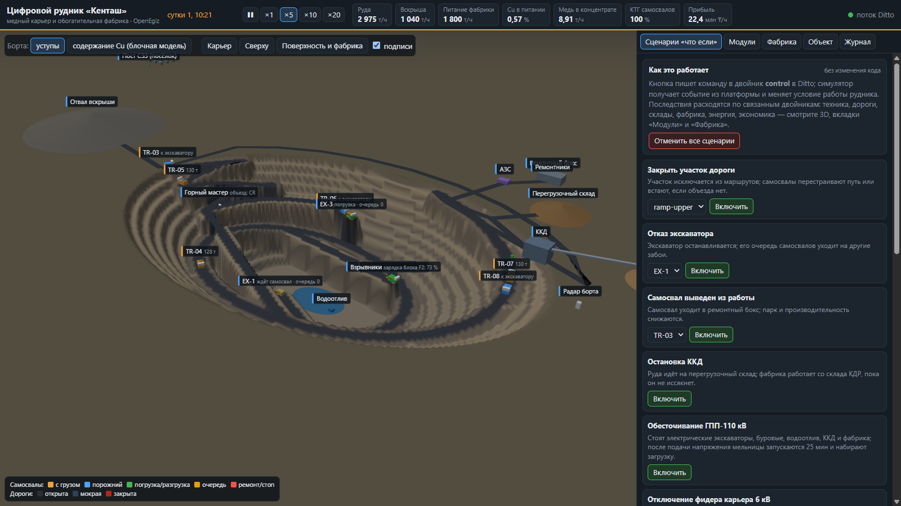
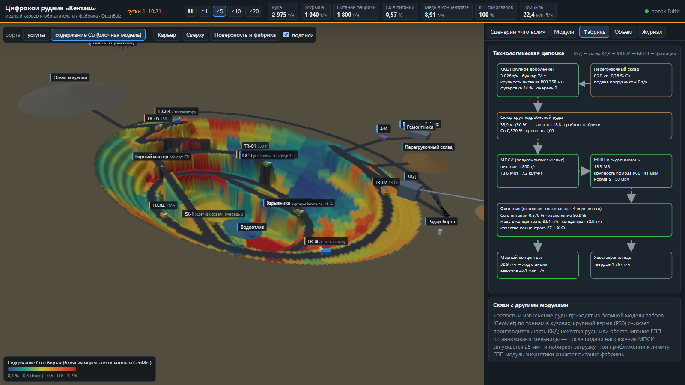
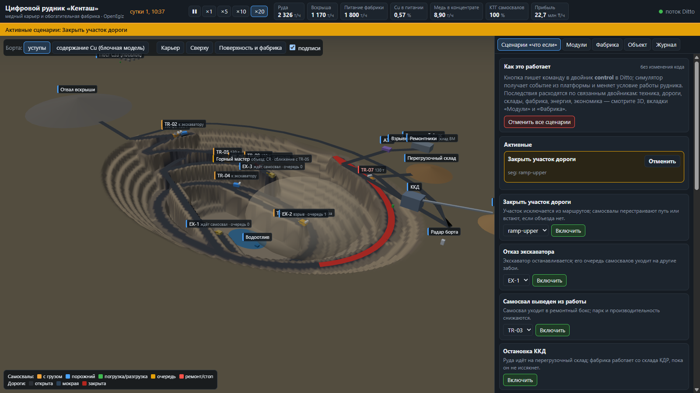
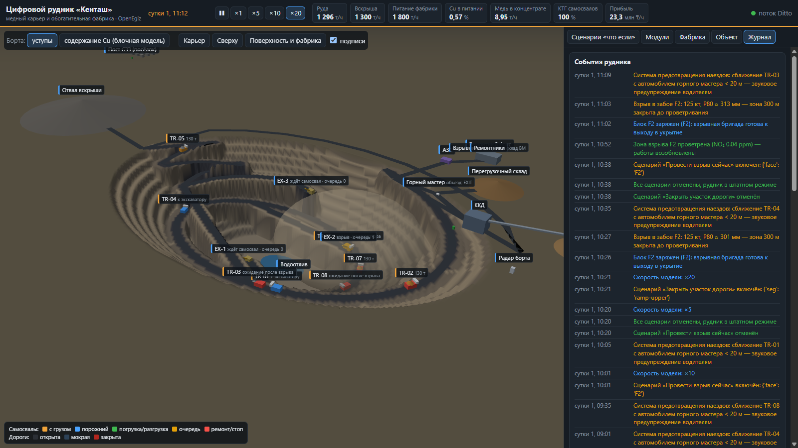
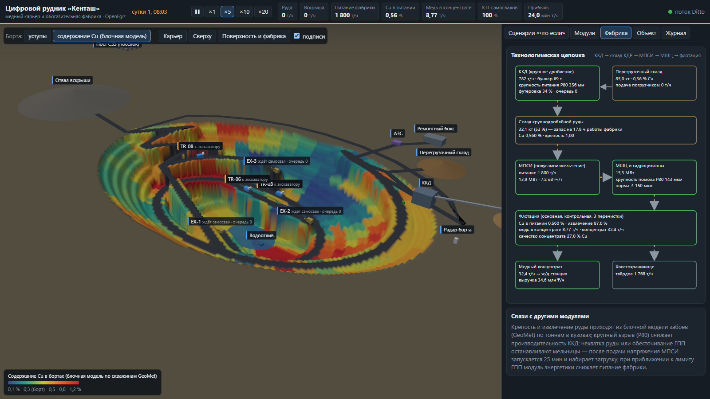

Цифровой двойник открытого медного карьера и обогатительной фабрики: от забоя до меди в концентрате и прибыли.
Запуск: sudo apt-get install -y make, затем make mine
Стенд: http://localhost:8200

Каждая тонна, вынутая экскаватором, едет в кузове с её содержанием меди, крепостью и кусковатостью; мощность и топливо считаются из работы машин; вода, погода, взрывы и борт меняют условия. Модель считается с шагом 1 модельная секунда и проверена 14 тестами (балансы, правдоподобие, сценарии).
Паспорт в attributes (тип, параметры техники, иерархия _parents, связи relations: питание, поток материала, обслуживание), состояние в features. Симулятор пишет только командами Ditto protocol modify /features через MQTT.
Стенд берёт начальное состояние поиском Ditto и дальше живёт на потоке изменений двойников. Сценарии и режимы — запись в двойник control; симулятор получает событие из Ditto. Пароль платформы подставляет прокси на сервере.
| Группа | Двойники | Состояние |
|---|---|---|
| Горные работы | 3 забоя, 3 экскаватора (2 электрических, 1 дизельный), 2 буровых станка, 8 самосвалов 130 т | Cu/S/Au, крепость, взорванный запас, P80; цикл, ковш, очередь; координаты, груз и его Cu, топливо, износ |
| Дороги | 12 участков: спиральный съезд 8 %, западный серпантин, объездная, плечи к ККД и отвалу | открыт/закрыт, мокрый, ограничение скорости, самосвалов на участке; геометрия — в паспорте |
| Переработка | ККД, склад КДР, перегрузочный склад, отвал, МПСИ, МШЦ, флотация, хвостохранилище | производительность, бункер, крупность, запасы, удельная энергия, помол P80, извлечение, концентрат |
| Инфраструктура | ГПП и 4 фидера, водоотлив и 3 насоса, АЗС, ремонтный бокс, метеостанция | нагрузка и лимит, зумпф/приток/откачка, запас дизеля, техника в ремонте, дождь/ветер |
| Безопасность | радар борта, 3 поста пыли и газов, 2 бригады и горный мастер (GNSS) | TARP, PM10, NO₂, запрет входа после взрыва; позиции людей, сближения с техникой |
| Модули | dispatch, economics, scenario-engine, control, mine/pit/plant | решения модулей, журнал взрывов, выручка/затраты, активные сценарии, сводные KPI |
| GeoMet (CC BY) | блочная модель: Cu, S, Au, измельчаемость, извлечение по 2000 пробам |
| El Aljibe (CC BY) | P80 нормального взрыва — медиана 12 взрывов, 356 мм |
| MWD (CC BY) | разброс скорости бурения |
| Энергия ГОК (CC BY-SA) | суточная форма нагрузки, зима/лето ×1,28 |
| OpenMines (MIT) | проверка средней скорости самосвалов |


Закрыть верхний участок съезда: участок красный → самосвалы перестраивают путь через западный съезд и объездную → рейс длиннее → меньше руды → склад КДР тратится → медь и прибыль ниже.
| Отказ экскаватора / самосвала | Обесточивание ГПП / фидера |
| Остановка ККД | Ливень, отказ насосов → подтопление F1 |
| Некачественный взрыв | Провести взрыв сейчас |
| Штиль и инверсия | Деформация борта → TARP |
| Окисленная руда | Срыв поставок топлива |
Отмена — «Отменить» у активного сценария или «Отменить все». Код не меняется: команда идёт через двойник control.
Выбор экскаватора по времени цикла на ценную тонну с учётом очередей и простоя. При отказе экскаватора вывозит на 20–26 % больше горной массы, чем жёсткое закрепление (тест).
Блочная модель GeoMet, рудоконтроль по кузову (вскрыша / бедная руда / ККД), усреднение к целевому содержанию, подача со склада погрузчиком.
Бурение по MWD, взрыв по готовности и окнам, кусковатость по Кузнецову–Рамлеру → ковш, цикл, ККД.
Пыль и NO₂ с проветриванием, радар борта и TARP, зарядка блока и вывод людей до взрыва, предупреждения о сближении.
Баланс ГПП по 8 группам, лимит 52 МВт с ограничением питания фабрики, профиль нагрузки реального ГОК.
ККД → МПСИ → МШЦ → флотация; износ, отказы, ТО-250, КТГ. Свои: водоотлив, склад ГСМ, экономика смены.

На снимке — облако взрыва в забое F2, самосвалы в ожидании допуска, журнал событий.

make mineramp-upper → Включитьmake smoke — сквозная проверка платформы
python3 -m unittest discover -s mine/tests -v — 14 проверок: баланс масс, скорость на подъёме, сравнение с OpenMines, детерминированность, последствия сценариев, допуск к взрыву, выигрыш диспетчеризации
Документы: README.md (запуск), SUBMISSION.md (модули, сценарии, данные и допущения), DATA_LICENSES.md (лицензии данных).